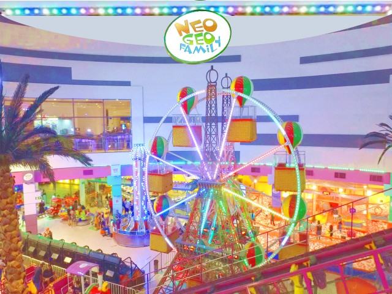
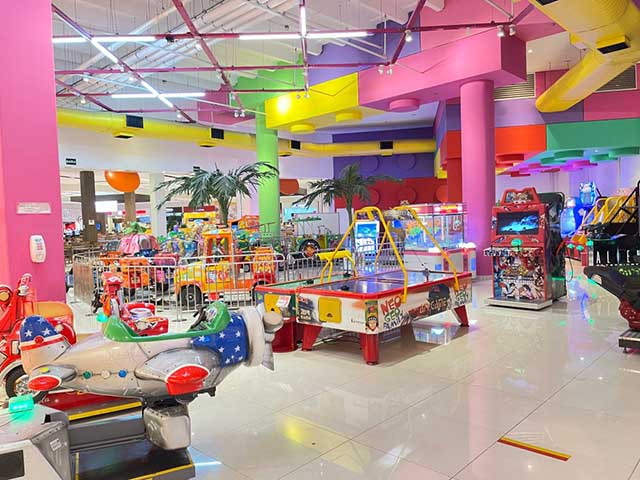
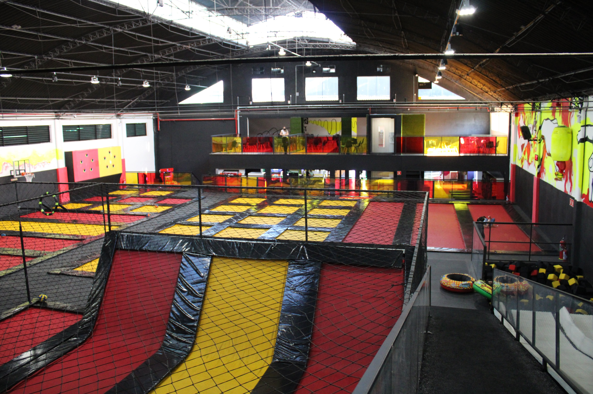

MINHA CIDADE GUARULHOS
PARQUE DIVERSÕES
Neo Geo Family - Internacional Shopping

Localizado em um shopping, este parque de diversões familiar oferece montanha-russa, barco viking e carrossel.
Localizado em: Internacional Shopping
Endereço: Rua engenheiro camilo olivetti, 295 - Vila Endres, Guarulhos - SP, 07034-010
Telefone: (11) 2086-9999
Neo Geo Family - Parque Shopping Maia

A Neo Geo Family vai muito além de um Parque de Diversões, oferecendo serviços como festas, eventos empresariais, excursões escolares e muito mais. A diversão não para por aqui!
Localizado em: Parque Shopping Maia
Endereço: Av. Bartolomeu de Carlos, 230 - Jardim Flor da Montanha, Guarulhos - SP, 07097-420
Telefone: (11) 2485-1044

Popularmente conhecido pelos jovens dos EUA, Canadá e Austrália, os trampolins, camas elásticas e outras atividades finalmente chegaram ao Brasil. O KANGOO TRAMPOLINE PARK é um parque de trampolins. Construído dentro de um enorme complexo de camas elásticas interligadas , com cerca de 1000m², o espaço abriga 93 camas elásticas, 7400 blocos de espumas e 3 grandes áreas de trampolins.
Localizado em: Parque Shopping Maia
Endereço: Av. Bartolomeu de Carlos, 230 - Jardim Flor da Montanha, Guarulhos - SP, 07097-420
Telefone: (11) 93770-8777
© 2023 Cidade de Guarulhos. Todos os direitos reservados.